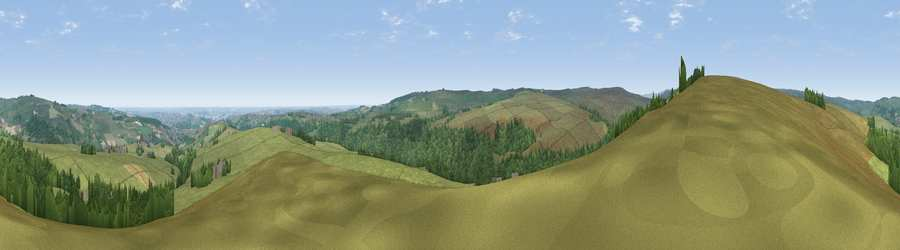

Viewpoint near Dungworth
#10414 in England · top 10% of its area beats it · near DungworthWhere it is
The exact computed spot (SK 26825 88275). Click the marker for map links.
The view, rendered

A 360° render of this exact spot computed from the terrain model, tree cover and land cover — summer colours, afternoon light, calibrated against photographs of famous viewpoints. Real trees, hedges and buildings will differ in detail.
The panorama
Grey silhouette: terrain skyline in each direction (720 bearings, Earth curvature and refraction included). Dashed green: skyline with trees (+15 m) and buildings (+8 m) as obstacles. Blue strip: how far the ground is visible on each bearing.
Where the view opens
Wedge length = distance to the farthest visible ground on that bearing (vegetation-aware). Rings at 10, 25 and 50 km.
What fills the view
72% grassland · 24% woodland · 2% cropland · 2% built-up
Angular shares of the visible panorama (visual magnitude), not map area. Landscape diversity 0.33 (0–1 Shannon).
Key numbers
More beautiful places nearby
The staircase of upgrades: each row has a higher view potential than everything closer. Driving times are estimates from straight-line distance, calibrated against real road routing — check an actual route before setting out.
| Place | Direction | Drive | Score |
|---|---|---|---|
| Edge Mount | N · 5 km | ~11 min | 70.2 |
| Viewpoint near Hathersage | SSW · 6 km | ~12 min | 70.9 |
| West Nab | N · 6 km | ~12 min | 71.7 |
| Viewpoint near Thornhill | W · 7 km | ~14 min | 74.1 |
| Viewpoint near Wharncliffe Side | NNE · 9 km | ~18 min | 75.2 |
| Wild Bank | WNW · 30 km | ~46 min | 76.2 |
| Viewpoint near Carrbrook | WNW · 30 km | ~47 min | 77.1 |
| Viewpoint near Mow Cop | SW · 51 km | ~72 min | 78.9 |
53.39064, -1.59811 · source: screening · position refined by local search. Computed location — check access rights before visiting.